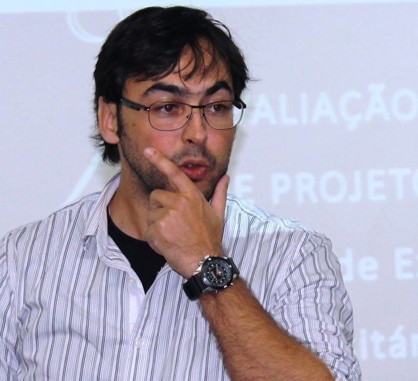

Os seminários do PPGEco apresentam artigos acadêmicos de pesquisadores do Programa e de outros centros brasileiros e internacionais. Geralmente, são realizados às Sextas-feiras (15:00hs), na sala SIGP 08 (Bloco A), onde se concentram as instalações do Programa.

Copula econometrics to simulate effects of private policing on crime
Autores: Francis Petterini, Akauã Flores (UFSC)
Data: 17 de Setembro (Sexta-feira), 2021
Horário: 15:00hs
Sobre o Apresentador
Programa de Pós-Graduação em Economia - UFSC
Formação: Doutorado em Economia pela Universidade Federal do Ceará, UFC, Brasil.
Áreas de pesquisa: Microeconometria aplicada, Análise de microdados, Avaliação econômica de políticas públicas
E-mail:f.petterini@ufsc.br
Website:CV Lattes Francis Carlo Petterini Lourenço
Economic Growth as a Double-Edged Sword: The Pollution-Adjusted Kaldor-Verdoorn Effect
Autores: Guilherme de Oliveira, Gilberto Tadeu Lima (USP)
Data: 10 de Setembro (Sexta-feira), 2021
Horário: 15:00hs
Sobre o Apresentador
Departamento de Economia e Relações Internacionais - UFSC
Formação: Doutor em Economia pelo Programa de Pós-Graduação em Economia da Universidade de São Paulo (IPE/USP)
Áreas de pesquisa: Macroeconomia do desenvolvimento econômico, Macromodelos ambientais e ecológicos
E-mail:oliveira.guilherme@ufsc.br
Website:CV Lattes Guilherme de Oliveira
Cultural Productivity and Short-Term Financial Commitment
Autores: Philipp Ehrl, Rafael P. Ribas (University of Amsterdam)
Data: 03 de Setembro (Sexta-feira), 2021
Horário: 15:00hs
Sobre o Apresentador
Programa de Mestrado e Doutorado em Economia - Universidade Católica de Brasília (UCB)
Formação: Doutorado em Economia, Universität Passau, UNI/Passau, Alemanha.
Áreas de pesquisa: Economia regional, avaliação de políticas públicas, economia internacional, microeconometria, e inovação.
E-mail:philipp.ehrl@gmail.com
Website:sites.google.com/site/philippehrl

International monetary policy spillovers: Linkages between U.S. and South American yield curves
Autores: Igor Bastos Cavaca, Roberto Meurer (PPGEco-UFSC)
Data: 27 de Agosto (Sexta-feira), 2021
Horário: 15:00hs
Sobre o Apresentador
Warren Brasil
Formação: Mestre em Economia, Programa de Pós-Graduação em Economia - UFSC.
Áreas de pesquisa: Macroeconomia, Econometria e Finanças
E-mail:igorcavaca@gmail.com
Website:www.linkedin.com/in/igorbastoscavaca/
Nonparametric functional data analysis applied to time series forecasting
Autor: Hudson S. Torrent
Data: 26 de Novembro, 2020
Horário: 15:30hs
Sobre o Apresentador
Departamento de Estatítica - UFRGS
Formação: Doutor em Economia pela Universidade Federal do Rio Grande do Sul
Áreas de pesquisa: Estimação de Fronteiras; Regressão Não-Paramétrica; Regressão Semiparamétrica; Previsão.
Statistical learning methods for time series forecasting
Autor: Flávio Ziegelmann
Data: 19 de Novembro, 2020
Horário: 15:30hs
Sobre o Apresentador
Departamento de Estatítica - UFRGS
Formação: Doutor em Estatística pela University of Kent at Canterbury - UK
Áreas de pesquisa: Séries Temporais; Econometria; Finanças Quantitativas.
E-mail:flavioaz@mat.ufrgs.br
Website:professor.ufrgs.br/flavio-ziegelmann
Semiparametric portfolio policies
Autor: André Alves Portela Santos
Data: 12 de Novembro, 2020
Horário: 15:30hs
Sobre o Apresentador
Programa de Pós-Graduação em Economia - UFSC
Universidad Carlos III Madrid
Formação: Doutor em Finanças Quantitativas pela Universidad Carlos III de Madrid.
Áreas de pesquisa: Econometria Financeira; Renda Fixa; Previsão; Machine Learning e Métodos Heurísticos.
E-mail:andre.portela@ufsc.br
Website:sites.google.com/site/andreportela

Complexidade econômica, desigualdade e política industrial
Autor: Dominik Hartmann[1], Paulo Gala[2]
Data: 05 de Novembro, 2020
Horário: 15:30hs
Sobre o Apresentador
Programa de Pós-Graduação em Economia - UFSC[1]
Escola de Economia de São Paulo - Fundação Getulio Vargas[2]
Formação: Doutor em Economia pela Universidade de Hohenheim, Alemanha.[1]
Doutor em Economia pela Fundação Getúlio Vargas, São Paulo.[2]
Áreas de pesquisa: [1]Desenvolvimento econômico; Complexidade econômica; Desigualdade; Ciência das redes; Geografia econômica.
[2]Macroeconomia; Finanças; Economia Brasileira; Desenvolvimento econômico.
E-mail:andre.portela@ufsc.br
Website: www.paulogala.com.br
Keynes: entre o pragmatismo e a ideologia
Autor: Pedro Cezar Dutra Fonseca
Data: 29 de Outubro, 2020
Horário: 15:30hs
Sobre o Apresentador
Programa de Pós-Graduação em Economia - UFRGS
Formação: Doutor em Economia pela Universidade de São Paulo - USP.
Áreas de pesquisa: Desenvolvimento Econômico, Formação Econômica do Brasil no século XX, História do Pensamento Econômico.
Website:professor.ufrgs.br/pedrofonseca
Agent based models and complex individuals: An epistemological analysis
Autores: Solange Regina Marin, Brena Paula M. Fernandez (Economia/UFSC), Daniel de S. Vasconcelos (Economia/UFSC)
Data: 22 de Outubro, 2020
Horário: 15:30hs
Sobre a Apresentadora
Programa de Pós-Graduação em Economia - UFSC
Formação: Doutora em Desenvolvimento Econômico pela Universidade Federal do Paraná - UFPR.
Áreas de pesquisa: Filosofia e Metodologia da Economia; História do Pensamento Econômico; Desenvolvimento Econômico.
E-mail:solange.marin@ufsc.br
Uma análise da reprovação e de evasão do ensino médio catarinense usando microdados administrativos
Autores: Francis Petterini, Max Cardoso (Núcleo de Econometria Aplicada/UFSC)
Data: 15 de Outubro, 2020
Horário: 15:30hs
Sobre o Apresentador
Programa de Pós-Graduação em Economia - UFSC
Formação: Doutor em Economia pela Universidade Federal do Ceará - UFC
Áreas de pesquisa: Microeconometria aplicada; Avaliação de políticas públicas.
E-mail:f.petterini@ufsc.br
Website:petterini.ufsc.br
Inflation persistence and inflation volatility: Evidence from Brazil
Autores: Cássio R. A. Alves, Márcio Poletti Laurini (FEA-RP/USP)
Data: 08 de Outubro, 2020
Horário: 15:30hs
Sobre o Apresentador
Formação: Doutorando em Economia - FEA-RP/USP.
Áreas de pesquisa: Macroeconomia; Política Fiscal; Política Monetária; Dominância Fiscal.
E-mail:cassioalves@usp.br
Optimal monetary and fiscal policy with limited asset markets participation and government debt
Autor: Paulo Victor da Fonseca
Data: 24 de Setembro, 2020
Horário: 15:30hs
Sobre o Apresentador
Formação: Doutor em Economia, Programa de Pós-Graduação em Economia - UFSC
Áreas de pesquisa: Política Fiscal; Política Monetária; Modelos DSGE.
E-mail:paulovictordafonseca@gmail.com
Website:sites.google.com/view/paulovfonseca

Investigating the expectation hypothesis and the risk premium dynamics: new evidence for Brazil
Autor: João Frois Caldeira
Data: 17 de Setembro, 2020
Horário: 15:30hs
Sobre o Apresentador
Programa de Pós-Graduação em Economia - UFSC
Formação: Doutor em Economia pela Universidade Federal do Rio Grande do Sul - UFRGS.
Áreas de pesquisa: Econometria; Finanças; Macrofinanças.
E-mail:joao.caldeira@ufsc.br